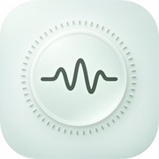
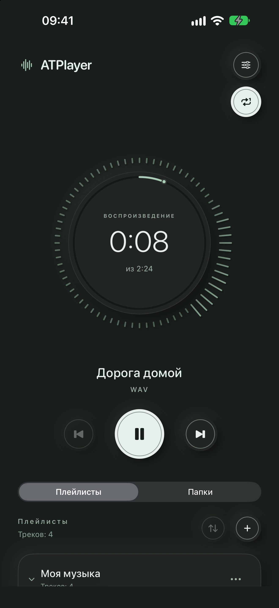
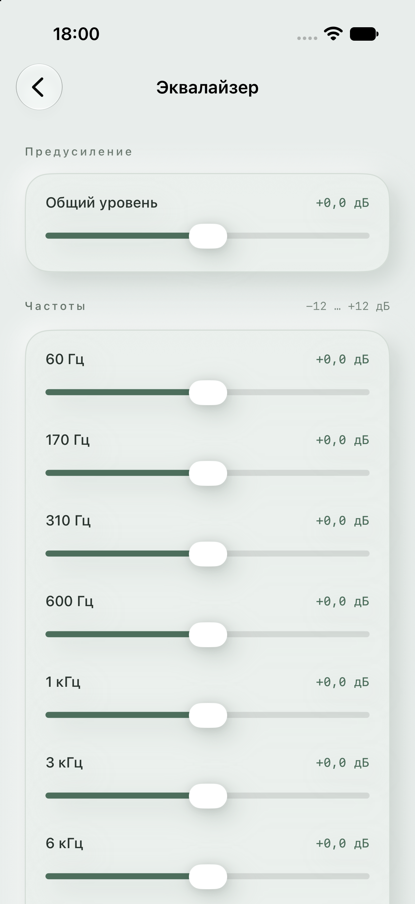
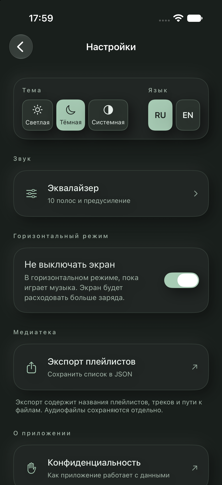

Ваши файлы
Добавляйте аудио через «Файлы». Импорт папки в плейлист включает и вложенные каталоги.

ATPlayerЛОКАЛЬНОЕ АУДИО · iPHONE И iPAD
Ваши аудиофайлы, плейлисты в нужном порядке и простое управление. Без аккаунта, рекламы и стримингового каталога.
Для iOS и iPadOS 26.2 или новее.

01 / ВОЗМОЖНОСТИ
Вы выбираете, что слушать. Плеер помогает собрать музыку и управлять звучанием.
Добавляйте аудио через «Файлы». Импорт папки в плейлист включает и вложенные каталоги.
Открывайте сохранённые папки по уровням. В очередь входит аудио текущего уровня; просмотр других папок не прерывает трек.
Создавайте и переименовывайте плейлисты, переставляйте списки и треки. Удаление записей сохраняет исходные аудиофайлы.
Управляйте музыкой с экрана блокировки. Live Activities доступны на поддерживаемых устройствах, если разрешены в настройках системы.
10-полосный эквалайзер и предусиление. Изменения применяются сразу и сохраняются автоматически.
Перематывайте трек круглым индикатором и наблюдайте визуализацию звука.
02 / ИНТЕРФЕЙС
Настоящие экраны приложения. Все изображения — предпросмотр готовящейся версии 1.3.
Воспроизведение и ваша коллекция на одном экране.

10 полос и предусиление для вашего звучания.

Выбор темы и языка — скоро в 1.3.
03 / НАЧАЛО
Нажмите «Добавить музыку» в пустом плейлисте или «Добавить треки» в меню плейлиста.
Укажите свои аудиофайлы или папку в приложении «Файлы».
Расставьте музыку в нужном порядке, нажмите на трек и слушайте.
ПРИВАТНОСТЬ
Плейлисты и настройки хранятся на устройстве. ATPlayer не содержит рекламы или аналитических SDK и не отправляет разработчику вашу медиатеку и историю прослушивания. Аккаунт не нужен.
Файлы из iCloud Drive и других поставщиков используют их сервисы. В поддержку попадают только сведения и вложения, которые вы решите отправить сами.
Политика конфиденциальностиМузыка в приложение не включена. Используйте доступные аудиофайлы без DRM, например MP3 или WAV. Воспроизведение зависит от формата, целостности файла и системного аудиодекодера.
Доступные локальные файлы воспроизводятся без интернета. Облачным и сетевым источникам может понадобиться соединение для чтения папок и загрузки аудио. Временный кеш может очищаться и не гарантирует постоянное офлайн-хранение.
Плейлисты сохраняют ссылки на оригиналы: исходный файл должен оставаться доступным. Экспорт JSON содержит названия и пути, а не аудиозаписи. Он не предназначен для восстановления медиатеки в приложении.
Музыка уже ваша. Осталось нажать play.